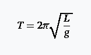
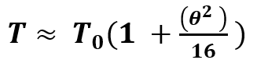

Modelo Fisico-Teorico:
Explicação qualitativa:
• Dependência com o Comprimento do fio(L): Quando aumentamos o tamanho do fio nos também aumentamos o percurso que o pêndulo leva para fazer uma oscilação com o mesmo ângulo
•Dependência com a Massa do objeto Suspenso (m): Os experimentos revelaram que o tempo de oscilação não depende da massa do objeto pois quanto mais massa mais forca o objeto possui, mas em contrapartida ele também terá mais resistência ao movimento(inercia) assim as duas forças se cancelam fazendo com que o movimento tenha a mesma duração
•Dependência com a Amplitude Angular (θ₀): O ângulo em que o pêndulo é souto pode influenciar a oscilação porque em ângulos pequenos o caminho é curto então a gravidade consegue puxar o peso mais rapidamente, mas quando o ângulo é grande o pêndulo ganha mais velocidade, mas o caminho fica longo de mais e a força que puxa o peso pro meio começa a enfraquecer no topo é como ele não consegue crescer
Explicação quantitativa:
Quando vamos calcular o tempo de oscilação de um pêndulo simples utilizamos a fórmula

onde T e o tempo de durão da oscilação, 2π uma constante matemática que surge da natureza circular, L éo comprimento do fio do pêndulo e G que é a gravidade.Dá para se notar que a fórmula não possui nela a constante massa, isso ocorre porque no movimento do pêndulo a massa não interfere no movimento.
Quanto maior o fio(L) menor será o tempo de oscilação, mas como ele está dentro da raiz quadrada o dobro do tamanho não faz com que seja o dobro do tempo, para isso tem que aumentar a corda 4 vezes
Na fórmula a gravidade é a força principal que move o sistema puxando o pêndulo para baixo, então quanto maior a gravidade menor o tempo, então para ter a metade do tempo precisa aumentar a gravidade em 4 vezes
obs: em caso de um ângulo maiores que 10° pode ser utilizado a fórmula de borda
